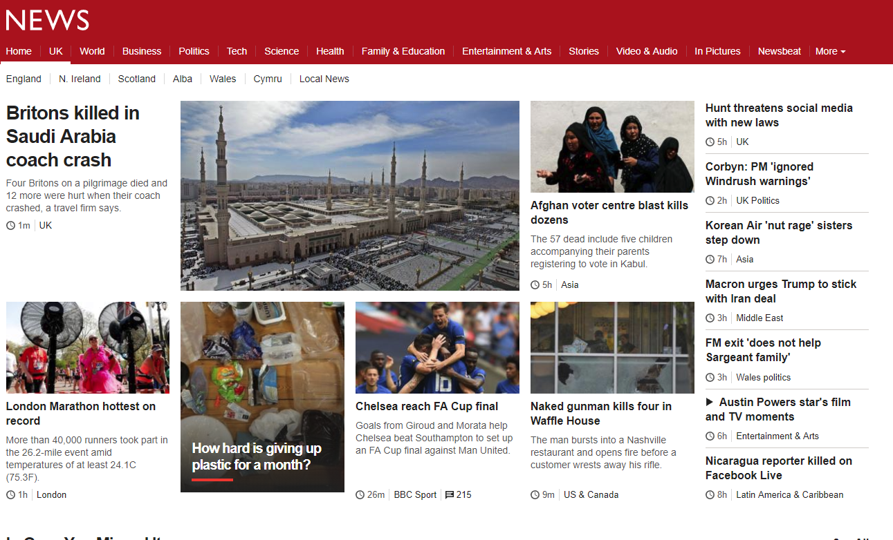

Good Practices
Design: When designing my website, I decided to take influence from a plethora of websites, my main idea was to look at websites that had won awards for their design. I also decided to look at websites that had a lot of traffic, such as news websites, I figured this would be a good idea because websites with a lot of traffic must have a good and intuitive design layout otherwise users would not go back to them.
I was also interested in the ways the user could interact with the website, small things like the hover feature in the navigation bar, these things may seem small, but I think they can or could have a bigger impact on the user’s overall experience when using a website.
For the third page displaying my CV, I have chosen to display a different style of layout with the flexbox layout.
To further improve the website both in design and interactivity I think I would have to look at more websites that have won awards in recent times, I would also have to investigate the psychology of it, such as; the “Cone Principle”.
Home
Main CSS